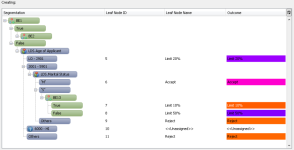

PMML Import
The PMML Import functionality allows users to import a segmentation tree or scorecard, and the segmentation within it, using a PMML file. The PMML Import wizard enables the user to map imported PMML characteristics to existing system characteristics. PMML Import supports PMML v3.0-v4.3.
| For information on importing other types of models using PMML, see the ACE Framework overview. |
The PMML Import functionality allows users to import a segmentation tree or scorecard, and the segmentation within it, using a PMML file.
| You can only import data into a folder if it is one of the allowed component types for that folder. For example, if you want to import a regression model, then as a minimum scorecards must be among the component types allowed for the destination folder (other required components will be embedded in the scorecard). See Manage allowed component types for more information on this subject. |
To import PMML data
- From the Explorer window, right click on the folder to import to and select Import.
- The Import wizard is initiated. The first screen, Select import source, is displayed. Locate and select the xml file to import.
- From the Files of type field, select PMML Format:
- Click on the Next button to display the second screen of the Import wizard, PMML File Details. The components available for import are listed on the screen:
- The 'Create class sets instead of boolean expressions where possible' check box will be selected. This indicates to the system that class sets should be created rather than nested boolean expressions. De-select the check box if you wish the system to create nested boolean expressions.
- Click on the Next button to display the third screen of the Import wizard, PMML Characteristics Mapping:
- Use the Characteristics filters, if necessary, to identify and click on a logical characteristic, then identify and click on the PMML characteristic with which to map it.
- Within the Local Characteristics area select the PMML characteristic. In the Physical Characteristics area click on the characteristic that you wish the PMML characteristic to be mapped to and select the Map button.
The mapped characteristic will be listed in the Mapped Characteristics table and the characteristic name will disappear from the PMML Characteristic display.
{kind=link}
{kind=link}
{kind=link}
| A numeric PMML Characteristic can be mapped to either a decimal, float or integer Logical Characteristic. |
- Continue until all PMML characteristics are mapped to logical characteristics
- To unmap any mapped characteristics, right click on a row in the Mapped Characteristics display, and select Unmap or Unmap All:
- Click on the Next button to display the fourth screen of the wizard, Scorecard or Segmentation Tree Preview. An image of the scorecard or segmentation tree to be imported is displayed.
- Click on the Next button to display the fifth screen of the wizard, Import object's Summary.
- Click on the Next button to display the sixth screen of the wizard, Confirm choices. Review the name and location of the imported file.
- Click on the Next button to display the seventh screen of the wizard, Import job summary.
- Click on the Finish button to import the PMML data.
{kind=link}
{kind=link}

| When the 'Create class sets instead of boolean expressions where possible' check box is not selected the preview will only contain nested boolean expressions |
The import monitor is displayed on the bottom right of the screen:

To cancel the import process, click on the cancel button  and click on the Yes button at the prompt.
and click on the Yes button at the prompt.
When the import is finished, the Import complete message is displayed.
Imported components are all listed under the folder in the Explorer window.